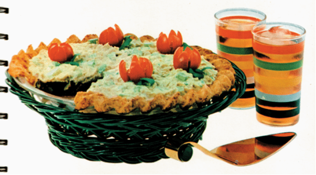

Home
Summer Salad Pie

Description:
This delightful vintage recipe comes from Betty Crocker's "Dinner in a Dish" published in 1963. While I haven't subjected my tastebuds to this journey of a dish, it is described to taste as pretty as it looks. I think that says everything about this meal. A recipe with everything to to turn your stomach: tuna, cheese, and citrus, rounded off with saline and a rubbery mouthfeel. Try at your own risk; at least it's not aspic.
Ingredients: (Serves 6)
Filling:
- 1 pkg. (3 oz.) lemon-flavoured gelatin
- 1¼ cups boiling water
- 1 can (8 oz.) tomato sauce
- 1 tbsp. vinegar
- ½ tsp. salt
- A Few drops each: Worcestershire sauce, Tabasco
- A dash of pepper
- ½ cup each: chopped celery, pimiento-stuffed olives
- ¼ cup chopped onion
- Cheese Pie Shell (below)
- Tuna Salad (below)
Cheese Pie Shell:
- 1 cup Gold Medal Flour (regular or Wondra)
- ½ tsp. salt
- ⅓ cup plus 1 tbsp. shortening, or ⅓ cup lard
- ½ cup shredded sharp Cheddar cheese
- 2 tbsp. water
Tuna Salad:
- 1 can (6½ oz.) tuna, drained
- 1 tsp. lemon juice
- 1 tsp. minced onion
- 1 cup diced celery
- Salt
- Paprika
- Mayonnaise or salad dressing
Preparation: (approx. 1.5 hr)
Cheese Pie Shell:
- Pre-heat oven to 475°
- Mix flour and salt in a mixing bowl
- Cut in shortening thoroughly
- Fold in cheese
- Sprinkle water gradually over the mixture, 1 tbsp at a time, tossing lightly with a fork after each addition
- If dough appears dry, a few drops of water may be added
- Gather dough into a ball
- On a lightly floured cloth-covered board, roll out 1" larger than inverted 9" pie pan.
- Ease into pan; flute and prick pastry
- Bake 8-10 min. until done; allow to cool
Tuna Salad:
- Lightly mix tuna, lemon juice, onion, and celery
- Season with salt and paprika to taste
- Chill in the fridge until ready to serve
- Just before serving, drain and mix in just enough mayonnaise to moisten
Summer Salad Pie:
- Dissolve gelatin in boiling water
- Stir in tomato sauce, vinegar, and seasonings
- Chill until slightly thickened
- Fold in celery, olives, and onion
- Pour into cooled Cheese Pie Shell
- Chill thoroughly until set
- Spoon Tuna Salad on top of pie
- You win an achievement if you can keep a bite of this down.
Home